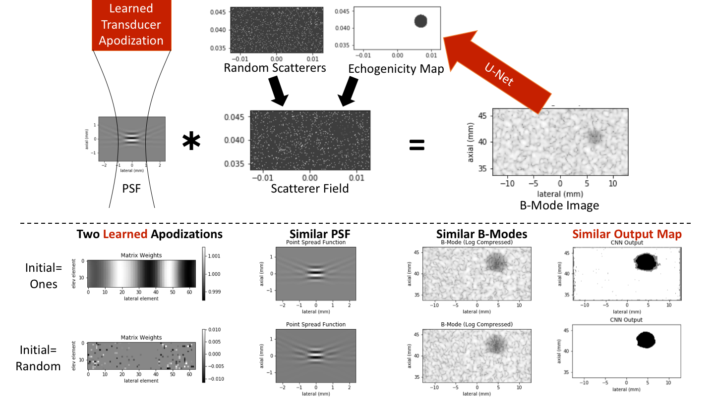

| Paper PDF |

|
Machine learning can be used to reduce the speckle inherent to ultrasound B-mode imaging, thus improving lesion detection. This project used the U-Net machine learning architecture to reconstruct a lesion map from a B-mode image. Additionally, the machine learning architecture was allowed to optimize the apodization applied to the transducer, allowing the algorithm to determine the "ideal" (within the bounds of ultrasound) point spread function for this task. The results demonstrate that the U-Net is able to reconstruct an echogenicity map with reasonable accuracy, reconstructing the location of any lesions accurately (the shape of the lesion is frequently distorted however). The apodization optimization always reconstructed a point spread function approaching that of the traditional full aperture. This suggests that for this task, the traditional imaging parameters for high resolution are most useful for the CNN lesion map reconstruction. While this particular study is limited in it's simulation assumptions, it still demonstrates the potential of machine learning to overcome issues of speckle noise in ultrasound imaging, which has many potential applications.
|
|
|
| Paper: |
| Code: |